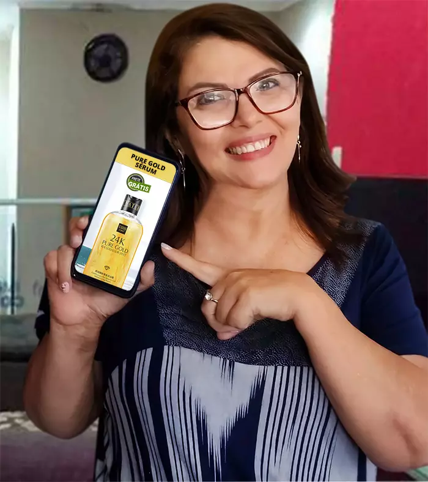

Nova Fórmula que Rejuvenesce Mulheres, podendo acabar com Rugas e Manchas em 21 dias.
Usando esse novo sérum rejuvenescedor pode ser fácil acabar com as rugas e marcas da pele!
Por Cristina Gomes e Felipe Moreira, BLOG
Matéria no programa da Fatima Bernardes - Foto: Portal BLOG
Em programa da própria rede globo foi apresentando um novo método rejuvenescedor com a capacidade de trazer de volta a beleza e vitalidade da sua juventude, deixando diversas mulheres do Brasil esperançosas, não importando se você tem 25 ou 72 anos.E uma coisa na vida é certa: os reflexos da idade chegarão para todas nós. Por volta dos 40 anos, já se torna perceptível o surgimento de rugas, marcas de expressão e manchas na pele, elas acabam se tornando comuns e condenam totalmente a idade de uma mulher, diminuindo sua autoestima e lhe causando uma série de inseguranças.
Acontece que esses problemas são muito mais comuns do que parecem, uma pesquisa da universidade de Oxford (Inglaterra), afirma que ao menos 93,65% das mulheres entre 39 a 65 anos, são afetadas por algum problema de pele, causado pela falta de tempo para dedicar a saúde e a beleza da pele, isso aumenta a procura por tratamentos caros e perigosos.
O fato é que para as mulheres a pele é algo extremamente importante, aumentando ainda mais as consequências desses problemas.
A professora Fernanda Gonçalves, fala um pouco sobre sua experiência com as Rugas e marcas de expressão:
Fernanda Gonçalves, 59 anos, mãe.
"Trabalho desde os 21 anos na área da educação como professora pedagoga em minha cidade.
Tenho manchas na pele desde a primeira gravidez. Para piorar, aos 35 anos, comecei a perceber rugas, e logo já estavam bem profundas no primeiro ano. Isso acabou comigo!
Percebi que muitas professoras falavam sobre minha pele, que eu precisava de um botox ou algo parecido para não ficar tão feia, isso era horrível.
Não quis apelar para o Botox, então conheci o Serum Gold 24K através de uma Dermatologista famosa dona de um blog. Em menos de 30 dias, minha pele era outra!
As professoras começaram a me perguntar o que eu estava usando, falando que minha pele agora parecia 20 anos mais jovem e sem nada de manchas ou rugas.
O jogo da auto estima virou para mim! E agora aquela mulher com baixa confiança, medo dos comentários das outras pessoas… Virou uma mulher forte e poderosa, sou MUITO Feliz hoje!"

Tenho manchas na pele desde a primeira gravidez. Para piorar, aos 35 anos, comecei a perceber rugas, e logo já estavam bem profundas no primeiro ano. Isso acabou comigo!
Percebi que muitas professoras falavam sobre minha pele, que eu precisava de um botox ou algo parecido para não ficar tão feia, isso era horrível.
Não quis apelar para o Botox, então conheci o Serum Gold 24K através de uma Dermatologista famosa dona de um blog. Em menos de 30 dias, minha pele era outra!
As professoras começaram a me perguntar o que eu estava usando, falando que minha pele agora parecia 20 anos mais jovem e sem nada de manchas ou rugas.
O jogo da auto estima virou para mim! E agora aquela mulher com baixa confiança, medo dos comentários das outras pessoas… Virou uma mulher forte e poderosa, sou MUITO Feliz hoje!"
Qual foi a Técnica Usada Por Ela?
Fernanda já frustrada com diversas tentativas de resolver o seu problema, procurou então uma dermatologista famosa, ela a recomendou um novo produto que vinha causando um estouro de venda pelo Brasil, e chocando todos os usuários com sua eficácia.O produto era o Serum Gold 24K, um sérum natural desenvolvido diretamente para rejuvenescer mulheres, combatendo o envelhecimento, e atuando diretamente como um tratamento para rugas, linhas de expressão e manchas na pele.
A doutora Andressa Stevens é uma dermatologista que teve contato direto com os desenvolvedores do Sérum Gold 24K.

Dra. Andressa Stevens
“É realmente impressionante o seu funcionamento, diferente de absolutamente tudo que já vi, normalmente os tratamentos possuem diversas falhas, funcionando de pessoa para pessoa, corrigindo apenas problemas pequenos, mas Sérum Gold 24K é totalmente diferente disso a forma de sua composição é funcional ao ponto de tornar a pele de uma pessoa de 70 anos tão jovial quanto uma mulher nos seus 25.”

Sérum Gold 24K Realmente Funciona?
Milhares de mulheres ao redor do Brasil já provaram dos resultados de Sérum Gold 24K, sua grande eficácia vem mudando cada vez mais a vida mulheres que não se sentiam bem com sua aparência.A maior prova de seus benefícios é a imensa quantidade de depoimentos recebidos todos os dias.
Essas são Cristina e Emanuela respectivamente, duas mulheres brasileiras que foram perdendo sua aparência com o passar do tempo, mas que recuperaram a beleza e juventude com a ajuda de Sérum Gold 24K, assim como foi mostrado no programa
E são apenas duas das milhares de vidas que Sérum Gold 24K já transformou, o que prova que Sim, ele funciona!
Atriz que já usou o Sérum Gold 24K
Grandes Artistas também resolveram conquistar esse sentimento de juventude e satisfação com sua beleza. A própria Amanda Raia, sobrinha da grande Atriz Claudia Raia foi uma delas, e fez questão de deixar um relato com seus resultados:Amanda Raia, 35 anos, mãe e atriz
“A idade chegando, os filhos, os muitos anos de trabalho com falta de tempo pra tudo, assim fica impossível fugir de problemas de pele. As rugas, marcas de expressão e manchas chegaram pra mim também, assim como vão chegar para você e para qualquer mulher, não da pra escapar.
Eu já estava com várias rugas e manchas que me deixavam muito chateada, mas na vida de atriz sou obrigada a estar perfeita para tudo, por isso precisava de várias daquelas sessões de skin care pra ficar bonita, mas a verdade é que aquilo só desgasta a pele.
Até que meu Dermatologista encontrou Sérum Gold 24K lá nos Estados Unidos. E Foi uma maravilha, não precisei mais daquelas longas sessões pra esconder rugas, até porque não tinha mais nenhuma, nem manchas nem nada.
Minha pele ficou muito mais jovem e linda de novo, mal acredito que estou sem nenhuma ruga. Estava louca pra contar esse segredo!!”
Eu já estava com várias rugas e manchas que me deixavam muito chateada, mas na vida de atriz sou obrigada a estar perfeita para tudo, por isso precisava de várias daquelas sessões de skin care pra ficar bonita, mas a verdade é que aquilo só desgasta a pele.
Até que meu Dermatologista encontrou Sérum Gold 24K lá nos Estados Unidos. E Foi uma maravilha, não precisei mais daquelas longas sessões pra esconder rugas, até porque não tinha mais nenhuma, nem manchas nem nada.
Minha pele ficou muito mais jovem e linda de novo, mal acredito que estou sem nenhuma ruga. Estava louca pra contar esse segredo!!”
Andreia Camargo
“Vivia sempre com manchas no rosto por conta do melasma, era um terror só, eu mal consegui me reconhecer quando usei o Sérum Gold 24K, já estava acostumada com meu rosto cheio de manchas, mas agora e chegaram a me dar uns 7 anos a menos, tô finalmente me sentindo bonita de novo.”
Mauricelia Costa
“Este Sérum Gold 24K me tirou completamente do poço e me fez dar uma enorme volta por cima, eu me sentia desanimada, frustrada comigo mesma por estar feia, até que minha amiga me indicou esse produto e agora finalmente consigo me olhar no espelho de novo, me sinto renovada.”

Márcia Rosa Botelho
“Antes de fazer o meu tratamento, me davam sempre uns 10 anos a mais do que eu tinha, me sentia muito mal com isso, afinal fui sempre muito vaidosa com a minha aparência, eu testava tudo pra tentar ficar bonita de novo mas nada adiantava, até que meu dermatologista me indicou o Sérum Gold 24K, isso faz uns 2 meses e olha, me sinto totalmente renovada, sem nenhuma comparação como estava antes”
Com esses resultados você já deve ter percebido como é fácil voltar a ser jovem novamente alcançando assim a pele que sempre sonhou, sem rugas, sem marcas de expressão na pele e principalmente com uma pele firme e bem hidratada como sempre deveria ter sido!Conheça o Sérum Gold 24K, Previne e Ajuda no Tratamento das Rugas.
Sérum Gold 24K, um produto rejuvenescedor que atua de forma rápida e eficaz. Sua tecnologia permite que o usuário previna e trate as rugas, manchas e outras linhas de expressão, tornando sua aparência jovem novamente, trazendo a beleza que você sempre quis.Os dermatologistas recomendam pois o sérum Sérum Gold 24K possui as propriedades principais para um tratamento eficaz de pele, agentes hidratantes e ácido glicólico, que garantem assim um efeito rejuvenescedor.

Fácil de Usar Com Efeitos Duradouros
O uso do Sérum Gold 24K é simples, basta lavar o rosto com sabonete para aplicar o sérum diretamente na pele:Coloque uma pequena quantidade na ponta do dedo indicador, aplique com leves toques na região do rosto que deseja maior efeito. Evite expressões faciais até a secagem, aguarde de 3 a 7 minutos enquanto o produto seca e age na pele.
Sérum Gold 24K também contém componentes que ajudam a regular os níveis de oleosidade da pele, um problema comum em pessoas com espinhas, e marcas no rosto.
Quais São Os Benefícios Do Sérum Gold 24K?
Sérum Gold 24K é o único produto produzido por uma seleção natural de Sérum especial que traz efeitos renovadores, onde ele atua como um Botox natural que reconstrói a pele. Veja algum de seus principais benefícios:Acabe com as rugas e garanta sua beleza de volta
De forma rápida, eficaz e sem nenhum efeito colateral, você terá sua pele sem nenhuma ruga, mancha, ou linha de expressão, retomando a beleza e a confiança que você merece!
Jordana da Silva
“Foi o meu filho que encontrou Sérum Gold 24K na internet, e como eu vivo sempre reclamando da minha pele, ele resolveu comprar para mim, eu comecei a utilizar e foi sensacional! Nos primeiros meses já tive um resultado que nunca havia tido antes.”